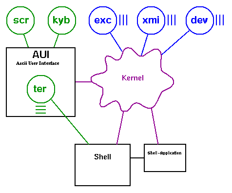
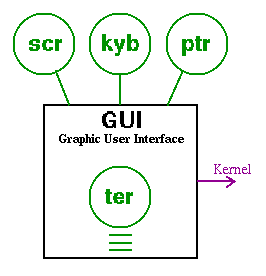
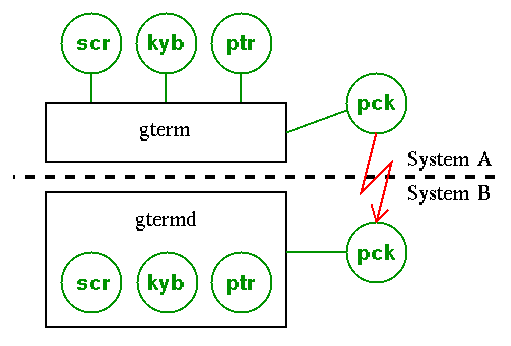
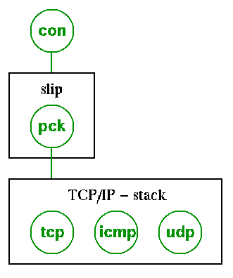
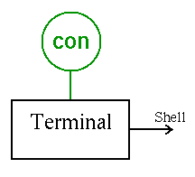
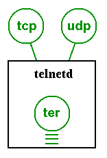

LUnix-Forum
I'm quite far with the new kernel, but this may be because i put many
things into external modules. I'm also thinking about using modules
for many other things. Here a picture of a minimal LUnix-system:

All circle-symbols shown above are Modules:
- XMI-Modules
- External memory interface modules. Used by the kernel to
access external memory.
- EXC-Modules
- Exec modules. Used by the kernel to execute binarys or scriptfiles.
- DEV-Modules
- Device modules. Used by the kernel to access discdrives.
- SCR-Modules
- Screen modules. Used by user interfaces or applications that need to
control the entire screen. (games?)
- KYB-Modules
- Keyboard modules. Used by user interfaces or applications that need direct
access to the keyboard. (games?)
- TER-Modules
- Terminal modules. Used by shells or other applications that can run on a terminal-screen.
All applications that can be started from a shell can also run on a terminal directly.
Every box in the picture is a process. Processes may contain modules (like "user interfaces")
- User interfaces
- Requires a Keyboard and a Screen (both accessed through modules). The user interface
builds "ter"-modules and starts shells or other applications.
- Shell
- Can be used to run scripts or edit/execute command-lines, passes arguments and controls
other processes.
The idea is, that you can choose what modules should be used. Just use a 80char-"scr" modul,
if you want to have 80 chars per line, or take the VDC-"scr" modul, if you have a C128.
(assuming someone will write such a VDC-"scr" modul). You have this freedom of choice with
every kind modul !
You could also think of other user interfaces, eg. graphical ones. Such a modul would offer
enhanced "ter"-modules (with some additional routines to create pull-down menus or something
like that).
A GUI might need a "ptr"-modul to have access to a pointer (mouse).

An other kind of modul, the "pck"-modul gives access to a packet-driver. A packet driver sends and
receives packets of data through either a real pear-to-pear connection (eg. userport or
serial interface) or through a virtual connection (eg. a TCP/IP-connection) that is built upon
an other pear-to-pear connection (eg. SLIP).
With such packet driver, you could let an other machine take control over your screen (like
you know it from the X11-window system).

Here an example on how a TCP/IP-stack can be realized. The raw byte-send/receive-connection
(eg. a swiftlink) can be accessed through a "con"-modul. A SLIP-process uses the "con"-modul to
generate a "pck"-modul that can be used by the TCP/IP-stack to deliver IP-packets. You could
switch to PLIP (parallel line IP) by just replacing the "pck"-modul.

A normal terminal-process invoked by a shell-command would just use a "con"-modul.

You would be able to use your C64 as a Internet terminal-server. All you need is a telnetd-process
that is able to generate "ter"-modules from TCP/IP-connections.

You might want to take a look at the next kernel. I decided to put my working-directory on the
net. The files in there might be unfinished, undocumented and all in all garbage :-)
If you dare, download them and tell me what you think. Choose the link
in the main "LUnix - next generation" page.